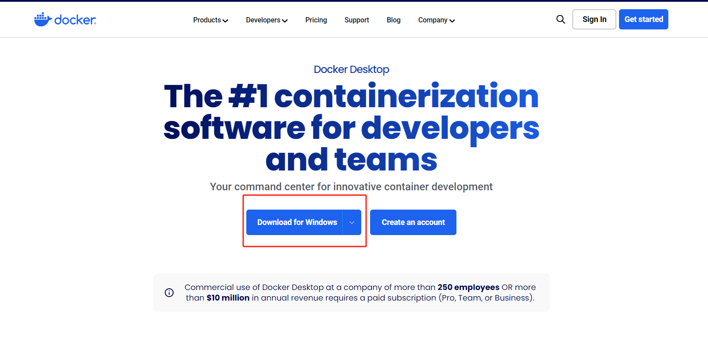
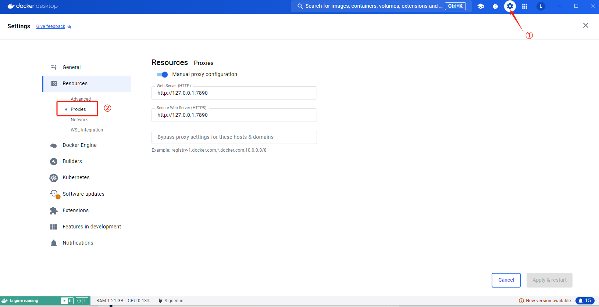
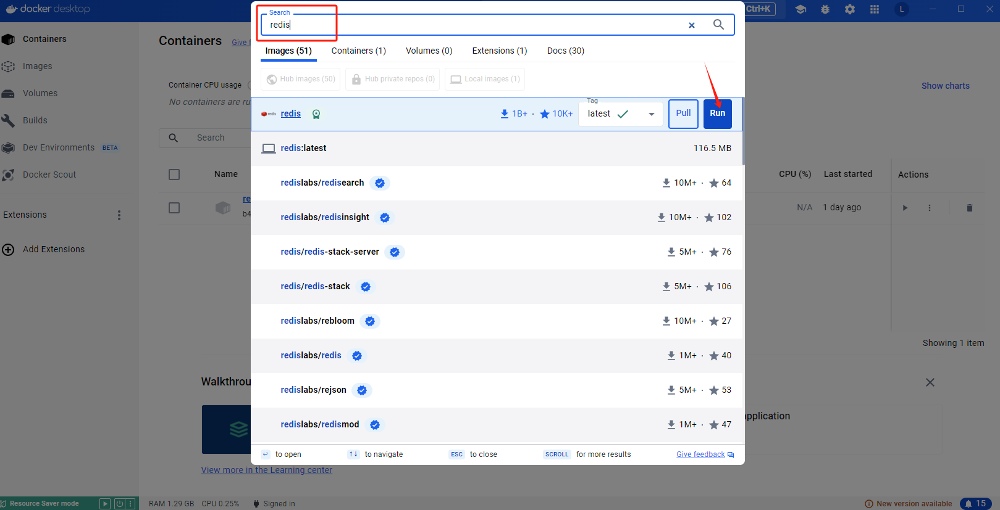
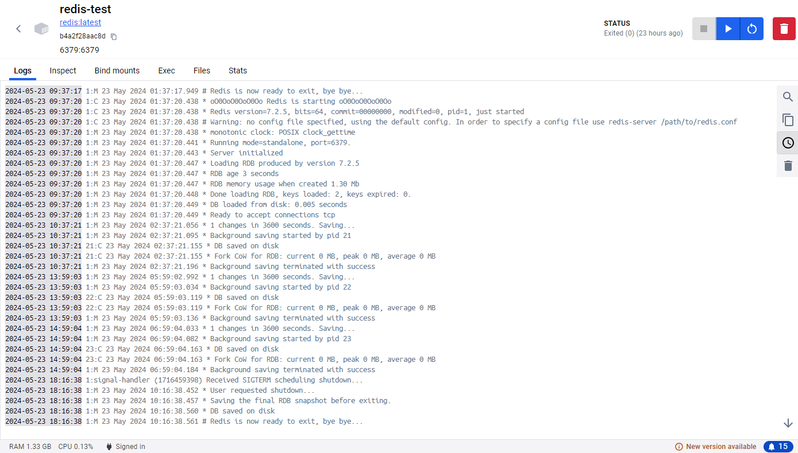
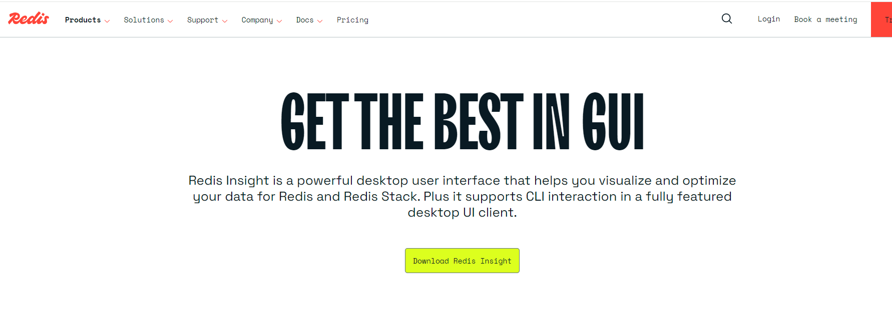
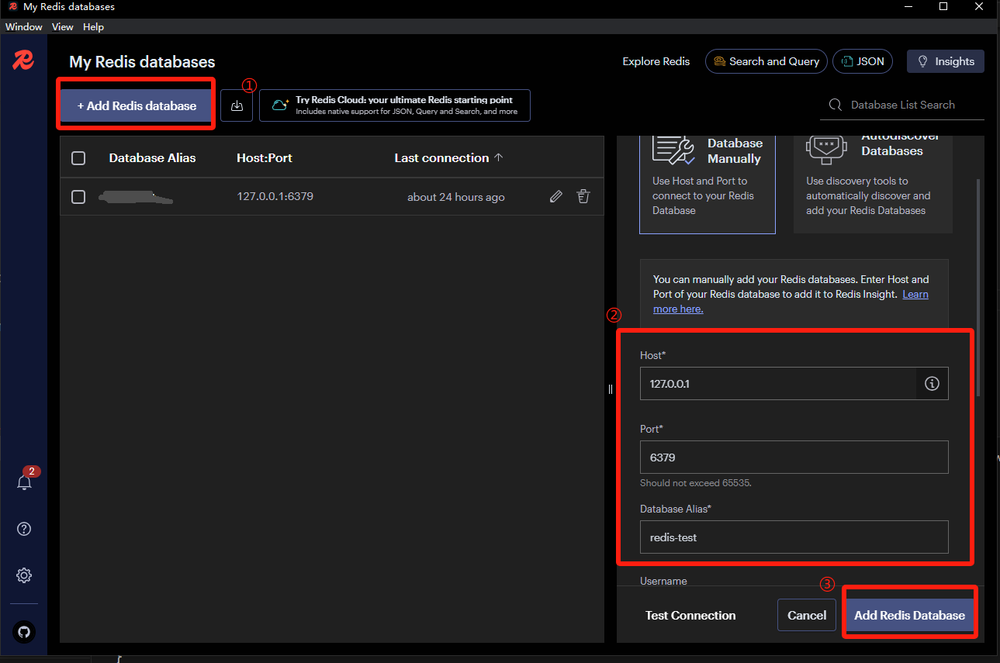
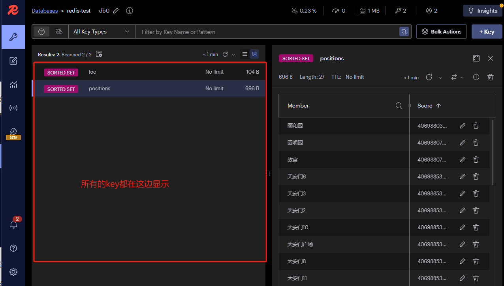

# 下载 docker
先下载 docker desktop，用来跑 redis
docker desktop 下载地址

打开 docker desktop, 使用时需要科学上网，按下图进行配置即可

在 docker desktop 搜索框搜索 redis，点击 run，把 redis 官方镜像下载并跑起来。

注：他让你填容器的信息:端口映射 就是把主机的 6379 端口映射到容器内的 6379 端口，这样就能直接通过本机端口访问容器内的服务了，Volumes 指定数据卷 用本机的任意一个目录挂载到容器内的 /data 目录，这样数据就会保存在本机。

这就是 redis 跑起来后的日志
# 下载 redis GUI 工具（RedisInsight、AnotherRedisDesktopManager 选择一个安装即可）
# RedisInsight
它是 redis 官方出的 GUI 工具，redisInsight 下载地址

打开 RedisInsight，连接刚才用 docker 跑的 redis server：

查看该服务所创建的所有 key

# AnotherRedisDesktopManager
参考
# node.js 中使用 redis
# 创建 nest 项目
npm install g @nestjs/cli
nest new projectName
# 安装 redis, 创建 service 和 module
npm install --save redis
nest g module redis
nest g service redis
redis.module 中连接 redis, 并通过 provide 将 redis 传给 redis.service
import { Module } from '@nestjs/common';
import { createClient } from 'redis';
import { RedisService } from './redis.service';
@Module({
providers: [
RedisService,
{
provide: 'REDIS_CLIENT',
async useFactory() {
const client = createClient({
socket: {
host: 'localhost',
port: 6379
}
});
await client.connect();
return client;
}
}
],
exports: [RedisService]
})
export class RedisModule {}
然后在 redis.service 中注入 REDIS_CLIENT，并封装一些操作 redis 的方法
import { Inject, Injectable } from '@nestjs/common';
import { RedisClientType } from 'redis';
@Injectable()
export class RedisService {
@Inject('REDIS_CLIENT')
private redisClient: RedisClientType;
// 定义方法
async getPositionsList(key: string) {
...
}
}
app.module.ts 引入 redis.service，即可使用该文件中定义的方法
import { BadRequestException, Controller, Get, Inject, Query } from '@nestjs/common';
import { AppService } from './app.service';
import { RedisService } from './redis/redis.service';
@Controller()
export class AppController {
constructor(private readonly appService: AppService) {}
@Inject(RedisService)
private redisService: RedisService;
@Get('getPos')
async getPos() {
try {
await this.redisService.getPositionsList('positions');
} catch(e) {
throw new BadRequestException(e.message);
}
return {
message: '添加成功',
statusCode: 200
}
}